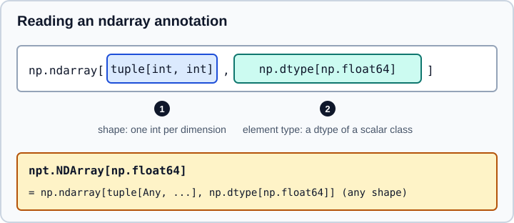

Static Typing with numpy.typing
|
This content was generated with the assistance of AI and should be verified against the official documentation before being relied on in production. |
This page targets NumPy 2.5 (examples were run on NumPy 2.5.4 with mypy 2.4.1), checked against the official documentation in October 2026. Examples target Python 3.13 or 3.14 and were run on Python 3.13. It explains how to annotate functions that take and return arrays, what the NumPy type checker information can tell you, and which older advice no longer applies. Type annotations are never checked at runtime: they document intent and let a static checker find mistakes before the code runs.
NumPy ships inline type information with its wheels (the package contains a py.typed marker and an __init__.pyi stub), so a checker that follows the standard packaging convention for typed libraries reads it without any extra install. The official page names mypy and the examples here use it. The NumPy 2.5 release notes state that every NumPy submodule now has typing annotations, including numpy.ma, and describe the shape typing as "still a work-in-progress".
The three aliases in numpy.typing
numpy.typing, conventionally imported as npt, exports four names, three of which you use daily:
| Alias | Meaning | Since |
|---|---|---|
|
Anything that can be coerced to an |
1.20 |
|
Anything that can be coerced to a dtype: a type object such as |
1.20 |
|
An alias for |
1.21 |
|
A helper for precision-generic scalars. Deprecated since 2.3 (see below). |
1.20 |
Use ArrayLike for parameters that accept lists, tuples and arrays, convert once inside with np.asarray, and return a precise NDArray[...]. Use DTypeLike for parameters that take a dtype= argument.
import numpy as np
import numpy.typing as npt
def standardize(values: npt.ArrayLike) -> npt.NDArray[np.float64]:
"""Return values scaled to zero mean and unit variance."""
arr = np.asarray(values, dtype=np.float64)
return (arr - arr.mean()) / arr.std()
def as_dtype(spec: npt.DTypeLike) -> np.dtype:
return np.dtype(spec)
print(standardize([1, 2, 3, 4]))
print(as_dtype("int16"), as_dtype(np.float32))
print(npt.NDArray[np.float64])Output:
[-1.34164079 -0.4472136 0.4472136 1.34164079] int16 float32 NDArray[numpy.float64]
Source: NumPy: Typing (numpy.typing)
ArrayLike is deliberately narrower than what the runtime accepts: it excludes object arrays. np.array(x**2 for x in range(10)) runs, but it builds a 0-D object array holding the generator, so the typed API treats it as an error. If you really mean it, annotate the value as Any or add a type: ignore comment. The same applies to DTypeLike and dictionary field specifications such as np.dtype({"field1": (float, 1), "field2": (int, 3)}), which are valid at runtime but discouraged by the types. Structured dtypes are covered in Structured Arrays.
Annotating ndarray: shape and dtype
np.ndarray is generic in two parameters, in this order.

-
The shape is a tuple of
int, one entry per dimension:tuple[int, int]for a 2-D array,tuple[()]for a 0-D array. The default istuple[Any, ...], which means any number of dimensions. -
The dtype is a subtype of
np.dtype, such asnp.dtype[np.float64]. The default isnp.dtype[Any].
The documentation supports type aliases written with the type statement of Python 3.12, so the same expressions read well as named types:
import numpy as np
type ImageRGB = np.ndarray[tuple[int, int, int], np.dtype[np.uint8]]
type Vector[S: np.generic] = np.ndarray[tuple[int], np.dtype[S]]Source: NumPy: Typing (numpy.typing)
Literal integer shapes such as tuple[Literal[3], Literal[3]] are documented as not currently supported for annotations. Only the number of dimensions can be expressed, and checkers differ in how strictly they enforce it, so treat the shape parameter as documentation first and as a check second. With mypy 2.4.1 the dtype parameter was enforced, but passing a 2-D array to a parameter annotated as a 1-D vector (tuple[int]) was not reported.
What a checker actually reports
The following file uses reveal_type, whose argument type a checker reports, and three deliberate mistakes. reveal_type
also exists at runtime from Python 3.11: typing.reveal_type prints the runtime type to standard error and returns its
argument unchanged.
from typing import Any, reveal_type
import numpy as np
import numpy.typing as npt
def scale(a: npt.NDArray[np.float64]) -> npt.NDArray[np.float64]:
return a * 2.0
ints = np.arange(3, dtype=np.int64)
floats = np.zeros(3)
scale(floats) # ok
scale(ints) # error: int64 array where float64 is required
scale([1.0, 2.0]) # error: a list is not an ndarray
reveal_type(np.eye(3))
reveal_type(np.concatenate([floats, floats]))
reveal_type(np.where(floats > 0, floats, 0.0))
reveal_type(ints.sum())
reveal_type(ints.mean())
x: npt.NDArray[np.float64] = np.array([1, 2, 3]) # no error: np.array returns NDArray[Any]
a: Any = (v**2 for v in range(10))
np.array(a)python -m mypy example.pyThe file is meant for the checker only: the deliberate list call would raise a TypeError if you ran it.
Output:
example.py:14: error: Argument 1 to "scale" has incompatible type "ndarray[tuple[int], dtype[signedinteger[_64Bit]]]"; expected "ndarray[tuple[Any, ...], dtype[float64]]" [arg-type] example.py:15: error: Argument 1 to "scale" has incompatible type "list[float]"; expected "ndarray[tuple[Any, ...], dtype[float64]]" [arg-type] example.py:18: note: Revealed type is "numpy.ndarray[tuple[int, int], numpy.dtype[numpy.float64]]" example.py:19: note: Revealed type is "numpy.ndarray[tuple[Any, ...], numpy.dtype[Any]]" example.py:20: note: Revealed type is "numpy.ndarray[tuple[Any, ...], numpy.dtype[Any]]" example.py:21: note: Revealed type is "numpy.signedinteger[numpy._typing._nbit_base._32Bit | numpy._typing._nbit_base._64Bit]" example.py:22: note: Revealed type is "numpy.float64" Found 2 errors in 1 file (checked 1 source file)
Source: NumPy: Typing (numpy.typing)
Observations from this output:
-
The checker finds a wrong dtype and a wrong container type, which is the common class of bug when a function silently receives integers or a list.
-
np.eye(3)is inferred as a 2-D float64 array, and the 2.5 release notes list functions whose results now have preliminary shape types, for examplenp.linspace(0, 1)as a 1-Dfloat64array andnp.sum(x, keepdims=True)with the same number of dimensions asx. -
Some results lose precision:
np.concatenateandnp.whereon these inputs areNDArray[Any](andnp.array(list)behaves the same).NDArray[Any]is assignable to everyNDArray[...], so thex:line above is accepted although the runtime array isint64. Precise return annotations on your own functions limit how far suchAnyspreads. -
ints.sum()issignedinteger[_32Bit | _64Bit]because the platform-specific width of the default integer is not assumed. The checker is platform agnostic, which is why the mypy plugin is no longer needed. -
The last two lines follow the workaround in the NumPy typing documentation for code that really means to pass a generator.
ArrayLiketries to avoid object arrays, and the documentation says that checkers complain aboutnp.array(v**2 for v in range(10)), which at runtime builds a 0-dobjectarray holding the generator, not ten numbers. Annotating the value asAny(or adding# type: ignore) states that this is intended. mypy 2.4.1 with NumPy 2.5.4 reported no error for the bare generator call either, so do not rely on the checker to catch it.
Why a function annotation does not protect you at runtime
Annotations are hints. The next call receives an integer array although the parameter is NDArray[np.float64], and Python runs it:
import numpy as np
import numpy.typing as npt
def mean_of(values: npt.NDArray[np.float64]) -> float:
return float(values.mean())
print(mean_of(np.array([1, 2, 3]))) # runs fine, the annotation is not enforcedOutput:
2.0
mypy accepts this call too, because np.array([1, 2, 3]) is typed as NDArray[Any]. Validate dtypes at the boundary of your program with np.asarray(values, dtype=np.float64) or an explicit assert arr.dtype == np.float64, and rely on the checker for the internal calls that have precise types. Checks of this kind belong in the tests described in Python Testing.
Overloads on dtype
When the return dtype depends on an argument, use typing.overload with Literal so callers get the precise type:
from typing import Any, Literal, overload
import numpy as np
import numpy.typing as npt
@overload
def load(path: str, *, as_float: Literal[True]) -> npt.NDArray[np.float64]: ...
@overload
def load(path: str, *, as_float: Literal[False] = ...) -> npt.NDArray[np.int64]: ...
def load(path: str, *, as_float: bool = False) -> npt.NDArray[Any]:
return np.loadtxt(path, dtype=np.float64 if as_float else np.int64)
reveal_type(load("x.txt", as_float=True))
reveal_type(load("x.txt"))Output of python -m mypy:
example.py:15: note: Revealed type is "numpy.ndarray[tuple[Any, ...], numpy.dtype[numpy.float64]]" example.py:16: note: Revealed type is "numpy.ndarray[tuple[Any, ...], numpy.dtype[numpy.signedinteger[numpy._typing._nbit_base._64Bit]]]"
Source: NumPy: Typing (numpy.typing)
Scalar types and precision
Scalar classes form a hierarchy (np.generic, then np.number, then np.floating, and so on) with concrete types at the leaves. The scalar hierarchy at runtime is described in Data Types. For type checking:
-
Accept any floating scalar with
TypeVar("S", bound=np.floating), as in the example below, and return the sameS;float32in givesfloat32out. -
The numeric precision parameter is invariant.
float16,float32andfloat64are subtypes offloating, but a checker does not necessarily treatnp.floating[_32Bit]as a subclass ofnp.floating[_64Bit]. -
np.timedelta64is not a subclass ofnp.signedintegerduring static checking, only ofnp.generic, although at runtimenp.timedelta64.__mro__does includesignedinteger. Do not write type-dependent logic that assumes the runtime hierarchy for timedeltas. -
Record array dtypes can be given as a
dtypeor as the helper argumentsformats,names,titles,alignedandbyteorder; the types treat them as mutually exclusive, although the runtime does not enforce that.
from typing import TypeVar
import numpy as np
S = TypeVar("S", bound=np.floating)
def double(a: S) -> S:
return a * 2 # type: ignore[return-value]
reveal_type(double(np.float32(1)))
reveal_type(double(np.float64(1)))Output of python -m mypy:
example.py:12: note: Revealed type is "numpy.floating[numpy._typing._nbit_base._32Bit]" example.py:13: note: Revealed type is "numpy.float64"
Source: NumPy: Typing (numpy.typing)
NBitBase is deprecated
numpy.typing.NBitBase, which older tutorials use to write precision-generic functions (TypeVar("T", bound=npt.NBitBase) with np.floating[T]), is deprecated since 2.3 and will be removed. The documented replacement is a TypeVar bound to a scalar class, as above, or typing.overload with one overload per precision:
from typing import overload
import numpy as np
@overload
def phase(x: np.complex64) -> np.float32: ... # type: ignore[overload-overlap]
@overload
def phase(x: np.complex128) -> np.float64: ...
@overload
def phase(x: np.clongdouble) -> np.longdouble: ...
def phase(x: np.complexfloating) -> np.floating:
return np.angle(x)mypy 2.4.1 reports the first two overloads as overlapping (overload-overlap), hence the comment; the call itself runs and returns float32 for a complex64 argument.
Source: NumPy: Typing (numpy.typing)
The mypy plugin is deprecated
Before NumPy 2.3, mypy needed plugins = numpy.typing.mypy_plugin in its configuration so that platform-dependent types such as np.int_, np.intp and np.longlong got a precision, and so that unavailable extended-precision types (float128, complex256) were removed on platforms without them. Since 2.3 the plugin entry point is deprecated in favour of platform-agnostic inference. Remove the line from mypy.ini, setup.cfg or pyproject.toml. Leaving it in still works but prints a runtime warning:
DeprecationWarning: `numpy.typing.mypy_plugin` is deprecated, and will be removed in a future release. Please remove `plugins = numpy.typing.mypy_plugin` in your mypy config.(deprecated in NumPy 2.3)
That is the observed text from NumPy 2.5.4. The consequence of dropping it is that precision-dependent types now come out as a union of widths (the _32Bit | _64Bit in the earlier output) and that extended-precision types exist on every platform for the checker, even where they do not at runtime. If new errors appear after removing the plugin, the official advice is to open an issue with a minimal reproducer.
Older books and tutorials written before NumPy 2.3 (mid 2025) that tell you to enable the plugin are outdated, and the warning says the plugin will be removed in a future release.
A checklist for typed array code
-
Take
npt.ArrayLikein public functions, convert once withnp.asarray, and return a specificnpt.NDArray[np.<scalar>]. -
Prefer
NDArray[np.float64]over barenp.ndarray; the bare form isndarray[tuple[Any, ...], dtype[Any]]and accepts everything. -
Use
DTypeLikefordtype=parameters and aTypeVarbound to a scalar class for generic scalar functions. Do not useNBitBase. -
Keep shape information in names and docstrings as well as in types, because the shape parameter is not yet a reliable constraint.
-
Run the checker in CI next to the tests.